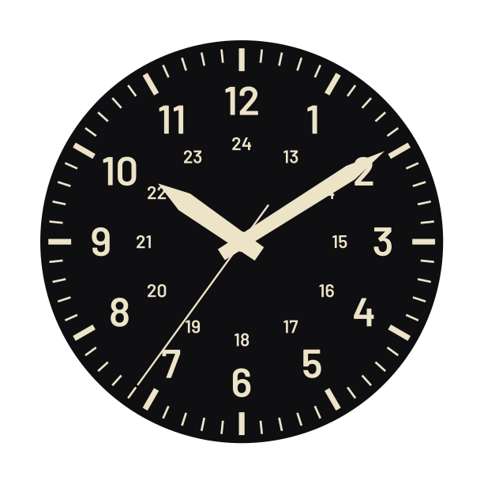

Guidebook
{{version}} · {{date}}
A watch-dial design tool for DrawBot on macOS
Dial Tool is one Python file that runs inside DrawBot, a free drawing app for macOS. It draws a dial as a list of rings, three hands and a date window, in millimetres.
Knockouts and hollow shapes are cut by combining outlines. DrawBot’s own routine is slow; skia-pathops is 2 to 14 times faster.
In DrawBot: Python → Install Python Packages → skia-pathops → Go. The Export log then starts with “shape combining: skia-pathops”.
Settings are stored as you work. Pressing ⌘R again, or quitting DrawBot, keeps them: the last session reopens.
Export → Save… writes a named copy; Load… opens one. The nine dials in this guide come as such files.
mm
Every length is in millimetres, drawn at true size. Radii are measured from the dial’s centre.
0° = 12
Clock angles, growing clockwise. 90° is 3 o’clock, 180° is 6, −90° is 9.
Fills
Everything exported is a filled outline, never a stroke. A 0.12 mm tick is exactly 0.12 mm in Illustrator.
Top first
The ring list is the stacking order. The top ring is drawn last, in front of the others.
It runs only inside DrawBot: the window, the fonts and the export all come from DrawBot’s own Python.
The canvas preview needs macOS 14 or newer. On an older system the PDF preview takes over, and the log says why.
A dial names its fonts as macOS does. On a Mac without the font, that ring falls back to Helvetica Neue.
Settings on the left, the dial on the right, time underneath. The next page shows it whole, redrawn in grey from the tool’s own measurements, with the field watch loaded.
Dial, Rings, Hands, Date, Export. One is shown at a time.
Top ring in front. The checkbox hides a ring; double-click a name to change it. The selected ring is the one the settings edit.
Add ring… puts a new ring above the selected one. Duplicate, Delete, move up, move down.
One scrolling list. Rows that don’t apply to the ring’s kind are hidden, not greyed out.
Follows every change. Pinch or ⌘-scroll zooms about the cursor; two fingers pan. With Guides on, the selected ring’s edges are orange.
Drag, or type 10:09:36. Now sets the clock’s time; Play runs the hands.
Guides are never exported. Canvas is the fast preview; PDF is DrawBot’s own viewer, the reference. Fit shows the whole page.
Ring, font, diameter; then how long the geometry (build) and the drawing (frame) took.
Drag for a rough value, type for an exact one, step for the last hundredth. Typing past a slider’s end extends the slider.
| 1.2 | sets 1.2 |
| +0.5 | adds 0.5 |
| x0.5 | halves |
| /3 | a third |
A choice can change which rows are shown: pick dot and Length disappears.
A ring repeats one thing round the centre, at its positions. A dial is a short list of rings, stacked.
Order works twice. It is the stacking order, and a ring only gives way to rings above it: to make ticks stop for markers, the markers go higher in the list.
The diver of page {{page:diver}}, taken apart. Nothing is special-cased: the triangle is a markers ring with a count of one, the depth rating a numerals ring with one label.
Ticks and markers repeat a shape, numerals a label; a band is colour between two radii. A ring’s kind can change at any time: it carries every setting.
Where a ring puts things. Six numbers describe almost any track, scale or set of hours.
Radii are absolute. Changing the dial’s Diameter moves no ring and no hand: set the diameter first, then each Radius, as you would for a real movement.
Span 360° spaces evenly. Less puts the first and last on the ends: Count 10 over 270° runs 0 to 9.
Every 3 keeps the cardinals; Skip those instead keeps the other eight.
Ticks and markers share one set of shapes. A markers ring adds a first position that can differ from the rest.
A fillet can’t exceed half the side it rounds, and a Hollow wall of half the width or more leaves the mark solid. Neither warns: the shape just stops changing.
Inner width × sets the inner end as a share of the outer: 0 is a triangle, 1 a bar, more than 1 widens inward. Round outer and Round inner are true fillets, in mm.
A markers ring draws its first position the same, double (with a Gap), as a triangle, or not at all. Scale × sizes it. Ticks have no such position.
How a ring reacts to the rings above it. One mechanism covers every pair of rings.
Skip compares angles to a hundredth of a degree. Two rings skip each other only where their positions truly coincide: same Start, counts that divide.
The ring drops its own positions wherever the chosen rings above already have a mark: minute ticks that stop for the hour markers.
The ring is cut back by Clearance mm round the shapes above: markers, markers and numerals, or everything.
Flat colour between Radius and Radius − Band width: rings, rails, zones and sectors.
Colour is flat, one per ring. A chapter ring with white print is three rings: the band, and white ticks and numerals above it — as in this sector dial, page {{page:sector}}.
Count 1 is a full ring. More positions cut it into segments that tile the span; Fill % is how much of its step each one covers.
One label per position: from a built-in set, a count, or a list of your own.
A Custom list follows positions, not hours. With Start 30° its first entry sits at 1 o’clock.
On path sets each letter on the circle with the font’s own spacing; below 3 and 9 o’clock it flips to read left to right.
Entries go to the positions in order. An empty entry leaves its position empty: the California dial, page {{page:california}}, is two such lists.
Each numerals ring has its own type, from any font installed on the Mac. Each numeral can then be corrected by eye.
| Radius ± | in or out, mm |
| Angle ±° | round the dial |
| Rotate ° | about its centre |
| Size × | larger, smaller |
Two-digit numerals look heavier than single ones. Size × 0.92 on 10, 11 and 12 evens them; Radius −0.2 pulls a wide 12 inward. Nudges are stored per position: change Count and they stay with the position, not the label.
| Family · Style | read from macOS; there is no fonts folder |
| Instance · Axes | a variable font’s named instances, and a slider per axis |
| Features | OpenType features under the designer’s own names |
| Language · Tracking | local forms, such as Turkish İ ı · 1/1000 em, as in Illustrator |
Hour, minute and seconds each have their own shape, size and colour. Lengths are millimetres from the pivot, as movements specify them.
Lengths don’t follow the dial. A 13 mm minute hand on a 24 mm dial overhangs it by a millimetre; nothing stops you.
| sweep | smooth |
| quartz | 1 step a second |
| 6 · 8 beats/s | 21,600 · 28,800 vph |
A hole in the plate that shows the date disc, with an optional printed frame. Print keeps its distance from it.
The frame and the day share one Print colour, and the disc is always white. On a dark plate a light frame would mean a light day on white: set Frame to 0 there, as the diver does.
Every ring is cut back by the frame plus Print clearance. Markers and numerals leave the date’s position empty altogether.
Shows is the day drawn on the disc; Text % of height sizes it.
In a production mask the aperture is an outline to cut or drill to.
3, 4:30, 6, 9 or 12; Radius sets how far out.
Nine dials drawn after well-known types, by eye: approximations, not measured copies. Each page prints the settings that drew the picture.
Each dial is a settings file in docs/guide/presets. Export → Settings → Load… opens it, ready to change.
Only what differs from a newly added ring is printed; everything else is at its starting value.
Fonts are named as on macOS: DIN Alternate, Futura, Helvetica Neue, Bodoni 72. These pages were rendered off-Mac with similar open fonts, so numerals differ slightly from what the presets draw on a Mac.
The presets have not been opened in the tool on a Mac yet. If one looks different from its page, the page is the intention.
Vectors at true size, a one-colour mask for production, and your own shapes coming in.
This is the production mask, mirrored: what goes on the film for toner transfer. Check its thinnest line at 100 % before you etch: a 0.09 mm tick is two pixels at 600 dpi.
A 30 mm dial opens 30 mm wide. PNG at your dpi: 30 mm at 600 dpi is 709 pixels.
Keeps numerals editable. The fonts are then needed where the file is opened, and on-path text becomes one object per letter.
Draw pointing up; the artboard’s centre is the anchor. Black is ink, white cuts holes. Outline text first.
Short constructions to build on, each with a dial that uses it. Then what to check when something looks wrong.
Ticks, Count 60. Two bands 0.12 wide: one at the ticks’ Radius, one at Radius − tick Length + 0.12. Page {{page:california}}.
Ticks Count 60 above ticks Count 300. The 300 Skip where: all marks above.
Numerals, Labels Custom: 24, 13, 14 … 23, at a smaller Radius and Size. Page {{page:field}}.
Two numerals rings on one Radius; each Custom list leaves the other’s positions empty. Page {{page:california}}.
Numerals, Labels Numbers, First number 5, Step 5, Digits 2, Start 30°. Page {{page:sector}}.
Numerals, Count 1, Start 0° or 180°, Labels Custom, Placement on path. Page {{page:dress}}.
A band below the numerals; Knock out: markers & numerals above; Clearance 0.3.
A band, Count 12, Every 2, Band width equal to Radius. Page {{page:sector}}.
Look at its checkbox in the list, its Every and Offset, and whether it skips positions a ring above takes.
The date window took it: markers and numerals leave its position empty.
The log should say “shape combining: skia-pathops”. If not, install it: page {{page:start}}.
Export → Settings → Defaults. The last session is in ~/Library/Application Support/DialTool.
tools/dial_probe.py in DrawBot and send its report.| Code and docs | github.com/duztman/dial-tool |
| Words | docs/glossary.md |
| Presets | docs/guide/presets |
| This guide | docs/guide/guide.html, built by tools/make_guide.py; its rules are in docs/design.md |